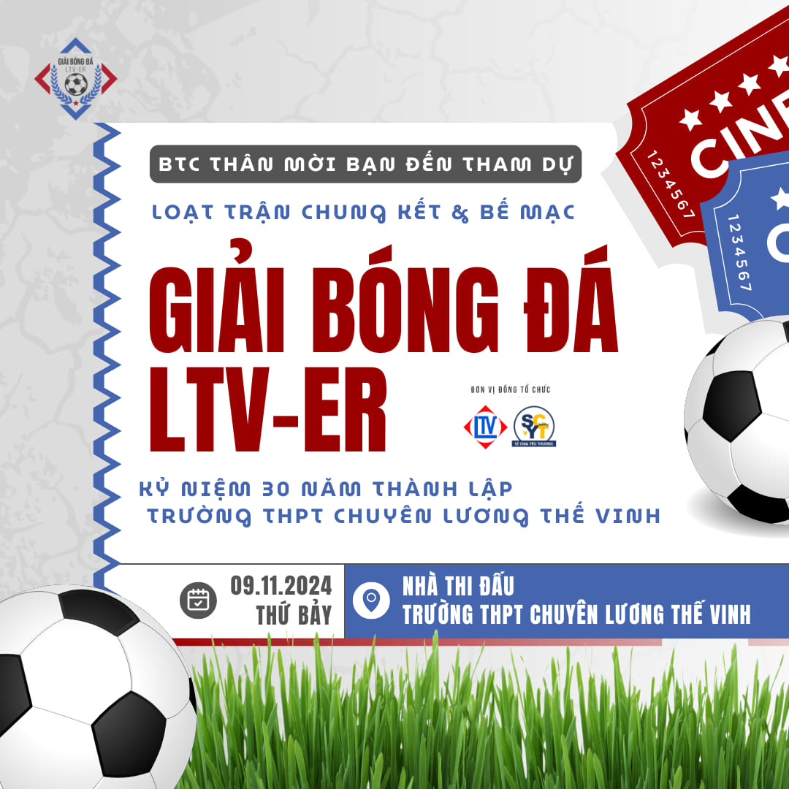
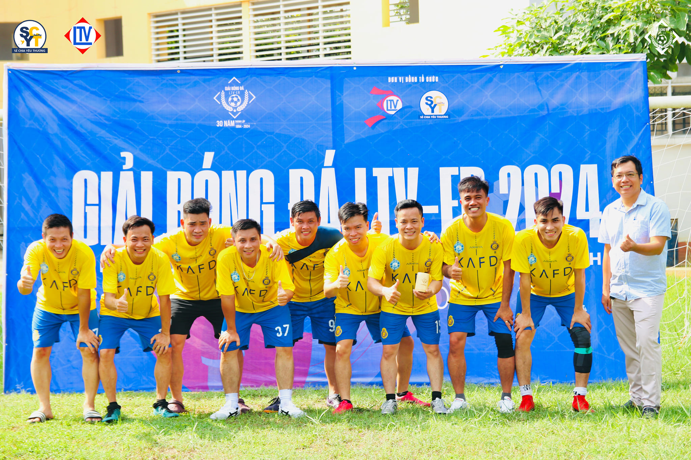

Mạng lưới tổ chức tự quản
Học thuật, Tranh biện, Nghệ thuật, Xã hội
Định hướng từ Đoàn trường
Bóng đá LTV & Hội khỏe Phù Đổng
Hệ Sinh Thái Hoạt Động Ngoại Khóa & Tự Quản Học Đường
Tại Trường THPT Chuyên Lương Thế Vinh, hoạt động ngoại khóa không đơn thuần là giải trí sau giờ học mà được định vị như một cấu phần giáo dục thiết yếu trong chiến lược đào tạo con người toàn diện — vững vàng tri thức học thuật, sắc bén về kỹ năng xã hội và giàu tinh thần trách nhiệm cộng đồng.
Mô hình hoạt động của các câu lạc bộ (CLB) được tổ chức theo phương thức học sinh làm chủ nhiệm và tự quản đề án, dưới sự hướng dẫn nghiệp vụ và định hướng chính trị từ Ban Chấp hành Đoàn trường. Từ việc xây dựng kế hoạch niên khóa, phân bổ ngân sách, vận động truyền thông đến thực hiện sự kiện, các bạn học sinh được trao quyền tự chủ tối đa, tạo nền tảng vững chắc cho năng lực hội nhập đại học và môi trường quốc tế.
Hệ Thống 6 Câu Lạc Bộ Tiêu Biểu Được Ghi Nhận
Hồ sơ tài liệu của nhà trường ghi nhận mạng lưới khoảng 14–15 câu lạc bộ học sinh. Dưới đây là 06 câu lạc bộ tiêu biểu đã được xác minh, đại diện cho các lĩnh vực học thuật, ngoại ngữ, kỹ năng tư duy, sáng tạo nghệ thuật và phục vụ xã hội:
ICIS
Câu lạc bộ chuyên môn định hướng giao tiếp quốc tế và nghiên cứu liên văn hóa. ICIS quy tụ những học sinh yêu thích ngoại ngữ, tạo diễn đàn trao đổi học thuật, kỹ năng giao lưu quốc tế và nâng cao năng lực hội nhập toàn cầu.
- Tổ chức các buổi tọa đàm học thuật và diễn đàn ngôn ngữ
- Phát triển dự án tìm hiểu các nền văn hóa thế giới
- Giao lưu liên trường và chuẩn bị năng lực du học
LTV English Speaking Club
Môi trường thực hành tiếng Anh thường nhật sinh động và cởi mở. Câu lạc bộ giúp học sinh phá vỡ rào cản tâm lý e ngại, xây dựng phản xạ tự nhiên trong giao tiếp và phát triển kỹ năng thuyết trình trước đám đông bằng tiếng Anh.
- Sinh hoạt thảo luận theo chủ đề thời sự định kỳ hàng tuần
- Tổ chức các mini game tương tác và tranh luận tiếng Anh
- Chia sẻ kinh nghiệm luyện thi các chứng chỉ quốc tế
ISDC
Sân chơi học thuật chuyên sâu về tranh biện theo các luật quốc tế (WSDC, BP). ISDC tôi luyện tư duy phản biện sắc bén, năng lực tổng hợp thông tin đa chiều, nghệ thuật diễn đạt logic và phong thái đĩnh đạc của một diễn giả.
- Tập huấn kỹ năng lập luận, phản biện và nghiên cứu dẫn chứng
- Tham gia thi đấu tại các giải tranh biện học sinh toàn quốc
- Tổ chức các trận đấu tranh biện nội bộ và mở rộng
LTV Orpheus
Điểm hẹn của những tâm hồn say mê giai điệu và nhạc cụ. LTV Orpheus là nòng cốt trong các chương trình văn nghệ lớn, kết nối các thế hệ học sinh qua âm nhạc và tạo không gian thư giãn tinh thần sau những giờ học tập căng thẳng.
- Dàn dựng tiết mục cho Đêm văn nghệ "Lương Thế Vinh tôi yêu"
- Hòa tấu thanh nhạc, ban nhạc acoustic và nhạc cụ truyền thống
- Giao lưu nghệ thuật tại các lễ kỷ niệm và sự kiện trường
Lumination
Nơi hội tụ những nhà sáng tạo trẻ tuổi với niềm đam mê nhiếp ảnh, quay dựng video, thiết kế đồ họa và nghệ thuật thị giác. Lumination chịu trách nhiệm ghi lại những khoảnh khắc đẹp nhất của thanh xuân LTV và truyền tải hình ảnh trường học năng động.
- Ghi nhận tư liệu hình ảnh và video cho các sự kiện trường
- Thực hiện các bộ ảnh kỷ niệm và ấn phẩm truyền thông học sinh
- Tập huấn kỹ năng quay chụp, chỉnh sửa hậu kỳ và đồ họa
Sẻ Chia Yêu Thương
Đại diện cho trái tim nhân ái và tinh thần trách nhiệm xã hội của học sinh LTV. Câu lạc bộ chủ động phát động các chiến dịch thiện nguyện, gây quỹ giúp đỡ trẻ em cơ nhỡ, người cao tuổi neo đơn và các hoàn cảnh khó khăn trên địa bàn tỉnh Đồng Nai.
- Tổ chức các chuyến đi thăm và trao quà tại mái ấm tình thương
- Dự án gây quỹ thiện nguyện nhân dịp Tết và Trung thu
- Lan tỏa tinh thần tương thân tương ái và giá trị cộng đồng
Danh Mục Tổng Hợp 14+ Câu Lạc Bộ & Đội Nhóm Học Sinh
Phân loại theo 4 mảng hoạt động chiến lược dưới sự định hướng và bảo trợ của Ban Chấp hành Đoàn trường:
| Lĩnh vực hoạt động | Tên câu lạc bộ / Đội nhóm | Định hướng chuyên môn & Mục tiêu | Tình trạng hồ sơ |
|---|---|---|---|
| Học thuật, Ngoại ngữ & Nghiên cứu | ICIS | Nghiên cứu liên văn hóa, giao tiếp quốc tế và kỹ năng hội nhập toàn cầu | Đã thẩm định |
| LTV English Speaking Club | Thực hành phản xạ giao tiếp tiếng Anh, thuyết trình và tranh biện ngoại ngữ | Đã thẩm định | |
| CLB STEM & Robotics LTV | Sáng chế khoa học công nghệ, lập trình điều khiển tự động và chế tạo robot | Đang sinh hoạt | |
| Nhóm Nghiên cứu KHKT Trẻ | Nghiên cứu khoa học kỹ thuật học sinh, dự án dự thi cấp tỉnh và quốc gia | Đang sinh hoạt | |
| Tranh biện & Tư duy phản biện | ISDC (Debate Club) | Nghiên cứu luật tranh biện quốc tế WSDC/BP, rèn luyện tư duy logic và lập luận | Đã thẩm định |
| CLB Lãnh đạo Trẻ LTV | Kỹ năng lãnh đạo, quản lý đề án, đàm phán và thuyết phục công chúng | Đang sinh hoạt | |
| CLB Sách & Văn hóa Đọc | Tọa đàm văn học, phát triển văn hóa đọc và kỹ năng tư duy cảm thụ | Đang sinh hoạt | |
| Nghệ thuật & Sáng tạo nội dung | LTV Orpheus | Âm nhạc, hòa tấu acoustic, thanh nhạc và biểu diễn nghệ thuật học đường | Đã thẩm định |
| Lumination | Nhiếp ảnh nghệ thuật, quay dựng video, thiết kế đồ họa và truyền thông học sinh | Đã thẩm định | |
| Đội Văn nghệ Xung kích | Dàn dựng ca múa nhạc kịch phục vụ các ngày lễ truyền thống và kỷ niệm trường | Đoàn trường | |
| CLB Mỹ thuật & Hội họa LTV | Hội họa, trưng bày triển lãm mỹ thuật và thiết kế không gian học đường | Đang sinh hoạt | |
| Thể thao & Thiện nguyện xã hội | Sẻ Chia Yêu Thương | Tình nguyện vì cộng đồng, gây quỹ xã hội và thăm hỏi các mái ấm nhân ái | Đã thẩm định |
| CLB Bóng đá Học sinh LTV | Huấn luyện thể lực, rèn luyện chiến thuật và nòng cốt giải Football Tournament | Ban Thể thao | |
| CLB Bóng rổ & Điền kinh LTV | Rèn luyện thể lực bền bỉ, thi đấu giao hữu các trường THPT trọng điểm | Ban Thể thao | |
| CLB Cờ vua & Cờ tướng LTV | Tập luyện tư duy chiến lược, tuyển chọn VĐV thi đấu Hội khỏe Phù Đổng | Ban Thể thao |
Ghi chú về nguồn số liệu danh mục câu lạc bộ
Hệ sinh thái ngoại khóa của Trường THPT Chuyên Lương Thế Vinh duy trì từ 14 đến 15 câu lạc bộ học sinh theo từng niên khóa (bao gồm các nhóm nghiên cứu khoa học, STEM/Robotics, cờ vua và câu lạc bộ thể thao). Danh sách 6 câu lạc bộ trên đây là các đơn vị tiêu biểu đã được xác minh thông tin từ tư liệu chính thức. Thông tin bổ sung về các câu lạc bộ còn lại cùng ban chủ nhiệm từng niên khóa sẽ tiếp tục được cập nhật theo thông báo của Đoàn trường.
Giải Bóng Đá Học Sinh LTV & Phong Trào Thể Dục Thể Thao
Cùng với trí tuệ chuyên môn, sức khỏe thể chất và tinh thần bền bỉ là bệ phóng vững vàng cho sự trưởng thành. Phong trào thể thao tại LTV được tổ chức sôi nổi thường niên, tạo cơ hội cho học sinh rèn luyện tính kỷ luật và sự gắn kết đồng đội.
Sự kiện thể thao được mong đợi nhất mỗi năm là Giải bóng đá học sinh LTV (Football Tournament), quy tụ các đội tuyển đại diện cho các khối chuyên tranh tài nảy lửa trên sân bóng đá cỏ nhân tạo của trường. Bên cạnh đó, nhà trường thường xuyên tham gia và đạt thành tích cao tại Hội khỏe Phù Đổng các cấp, phát triển các bộ môn bóng rổ, cầu lông, điền kinh và cờ vua.


Dấu Ấn Đoàn Trường & Các Phong Trào Thanh Niên Xung Kích
Ban Chấp hành Đoàn trường THPT Chuyên Lương Thế Vinh giữ vai trò trung tâm trong công tác định hướng, tổ chức và đồng hành cùng các hoạt động phong trào thanh niên. Các chương trình lớn ghi dấu ấn qua nhiều thế hệ bao gồm:
- Hội Xuân Đón Tết: Không gian văn hóa truyền thống với các gian hàng ẩm thực dân gian, trang trí cổng trại và trò chơi tập thể.
- Đêm Nghệ Thuật "Lương Thế Vinh Tôi Yêu": Sân khấu biểu diễn tài năng ca múa nhạc, kịch nghệ và hòa tấu do học sinh dàn dựng.
- Cuộc thi Khoa học Kỹ thuật & Học thuật: Sân chơi nghiên cứu khoa học, Olympic Mác – Lênin và các cuộc thi tìm hiểu lịch sử, văn hóa Đồng Nai.

Khí Chất Tự Tin Của Tuổi Trẻ Chuyên Lương Thế Vinh
Không chỉ xuất sắc trong các kỳ thi học sinh giỏi, học sinh LTV khẳng định hình ảnh thế hệ trẻ năng động, giàu sáng tạo, tự tin thể hiện cá tính và luôn tràn đầy nhiệt huyết cống hiến cho tập thể.
Quy Trình Gia Nhập & Thành Lập Câu Lạc Bộ Mới
Mọi học sinh khi trúng tuyển vào Trường THPT Chuyên Lương Thế Vinh đều có cơ hội đăng ký tham gia hoặc khởi xướng đề án thành lập câu lạc bộ mới theo quy trình 4 bước chuẩn hóa:
Tuần Lễ CLB (Club Fair)
Tham gia tuần lễ giới thiệu các câu lạc bộ được tổ chức đầu năm học để tìm hiểu định hướng hoạt động và lựa chọn môi trường phù hợp.
Đăng Ký Tuyển Quân
Nộp đơn ứng tuyển vào các ban chuyên môn (Nội dung, Truyền thông, Hậu cần, Đối ngoại) theo các đợt mở đơn chính thức của từng CLB.
Phỏng Vấn & Sinh Hoạt
Tham gia vòng phỏng vấn, thử thách nhóm và bắt đầu sinh hoạt chuyên môn định kỳ theo lịch trình đã được Đoàn trường phê duyệt.
Khởi Xướng Đề Án Mới
Nhóm học sinh có cùng đam mê có thể xây dựng đề án hoạt động chi tiết gửi Ban Chấp hành Đoàn trường để xét duyệt thành lập CLB mới.